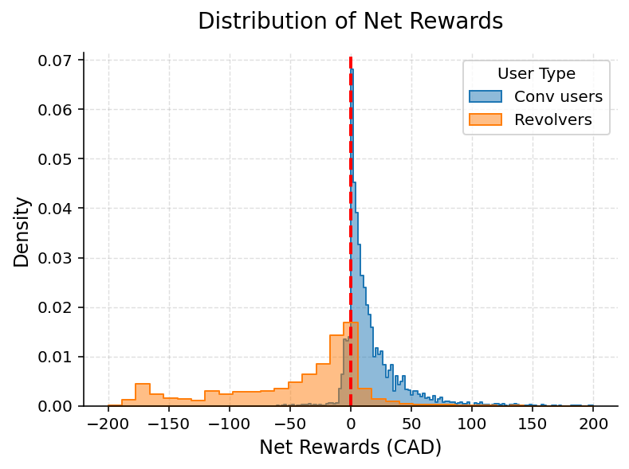
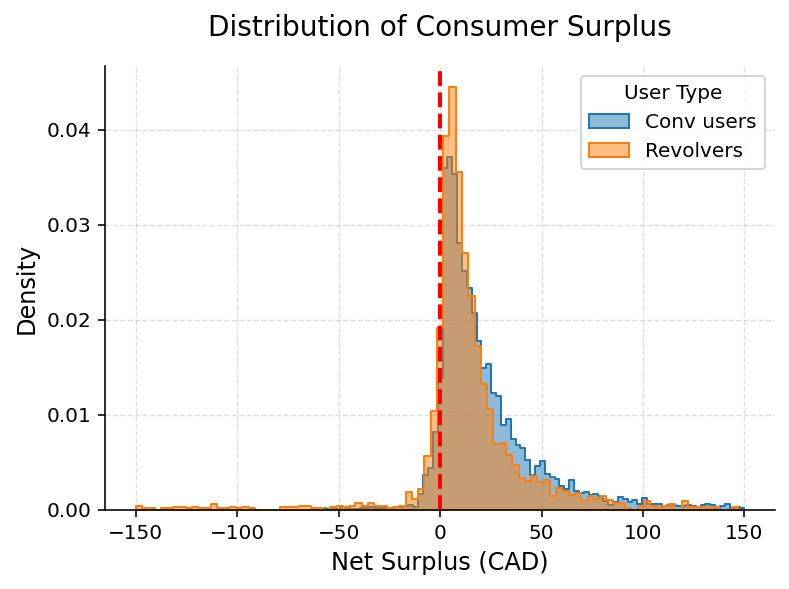

Chi Danh Dao (Dan)
Welcome. I am a PhD candidate in Economics at Queen's University.
My current research examines household financial decisions, consumer credit, and the distributional consequences of financial products.
Current research
Job market paper: Rewards, Credit Access, and Inequality in the Credit Card Market
This paper examines the distributional consequences of credit cards by quantifying how unevenly welfare gains from these products are distributed across consumers. Whereas existing literature models credit cards as either payment methods or sources of liquidity; I model demand for both functions and quantify their value to consumers. I first show that cardholders who borrow from their credit cards (i.e., Revolvers), do so to fund their consumption. Because nominal reward-based metrics (i.e., rewards minus fees) omit this consumption utility, they understate the benefits of credit cards to these consumers. This omission is consequential: accounting for both functions reveals that credit cards generate CAD 9.1 billion in annual welfare gains to consumers, far exceeding the CAD 0.825 billion implied by reward-based metrics. Because revolving cardholders often receive negative net monetary transfers and earn lower incomes than their non-revolving counterparts, reward-based metrics also overstate the Gini coefficient of welfare gains by 44\%. Finally, eliminating the credit function increases the Gini coefficient of card-derived welfare gains by 7\%. This result indicates that access to revolving credit can be progressive and challenges the view of credit card borrowing as inherently exploitative.

